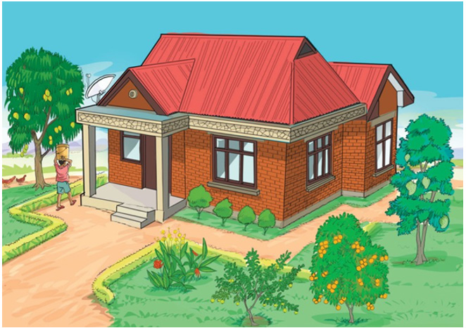

Doto alisema, “Rafiki yangu Tumaini, nyumba yenu ni safi na inapendeza sana. Maua yamepandwa kwa mpangilio mzuri.” Kulwa naye aliongeza, “Rangi mbalimbali zilizopakwa zinaifanya nyumba yenu ipendeze zaidi.” Niliwashukuru kisha tuliketi na kuzungumza mambo mengine. Niliwaeleza kuwa siku za mapumziko tunawasaidia wazazi wetu kufanya usafi wa mazingira. Vilevile, tunamwagilia bustani ya maua. Doto naye alisema, “Kweli ninyi ni mfano bora wa kuigwa. Mazingira safi ni muhimu kwa afya zetu.”
Siku hiyo, baba alinunua matunda na mama alitupikia chakula kizuri. Baada ya chakula cha mchana, tulikaa barazani na kutega vitendawili. Tulimkaribisha kaka ili asikilize jinsi tunavyotega na kutegua vitendawili. Kaka alitwambia kwamba yeye ataandika alama za kila mmoja wetu. Alitueleza kuwa atakayetega kitendawili na wengine wakashindwa kutegua, atakuwa amepata alama. Hivyo, mshindi atakuwa yule aliyepata alama nyingi.